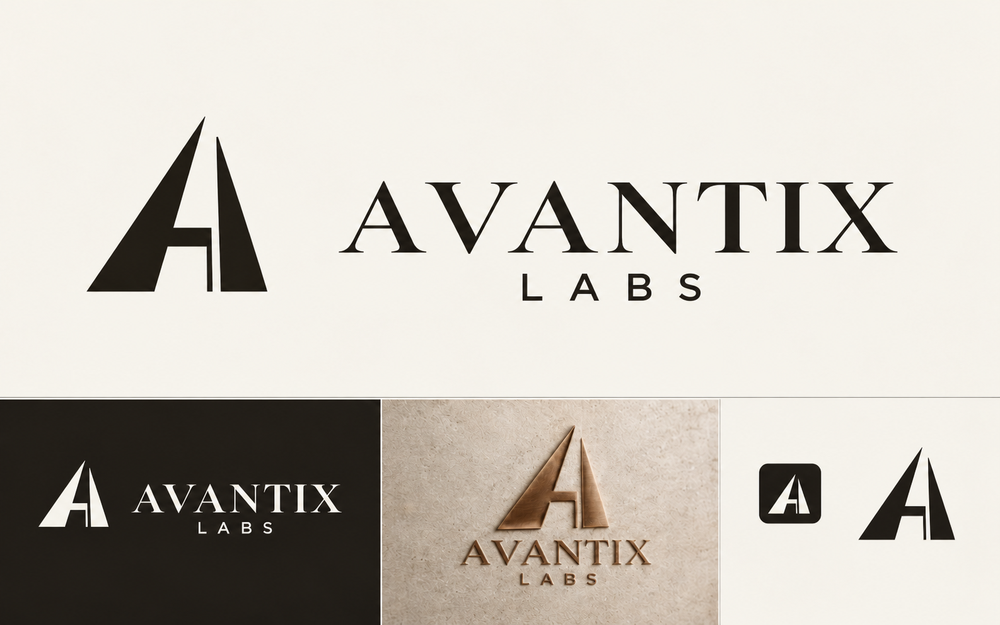
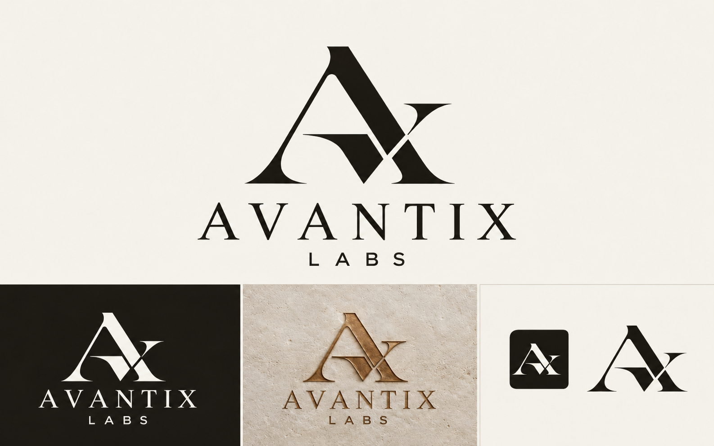
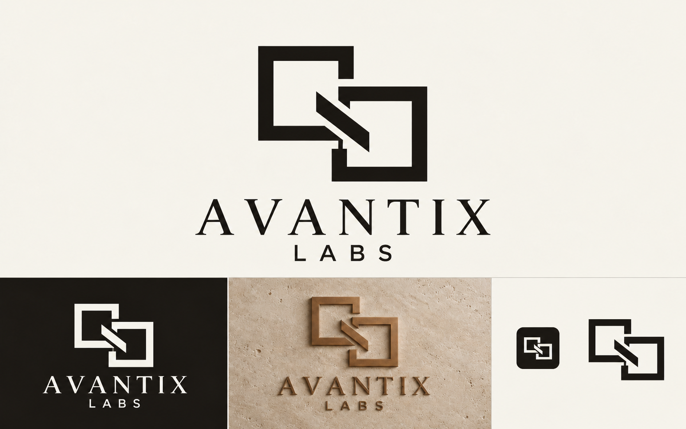
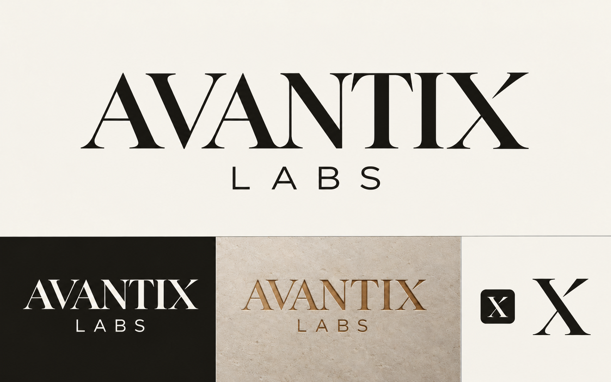
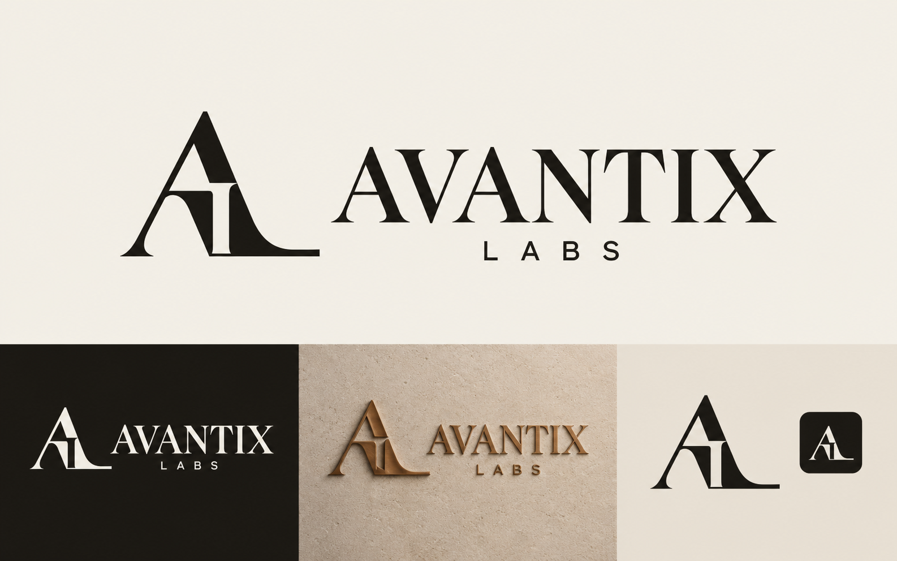
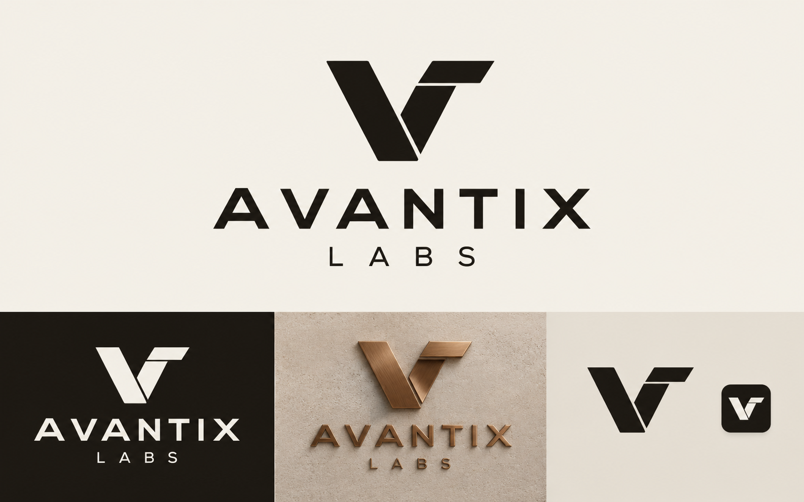
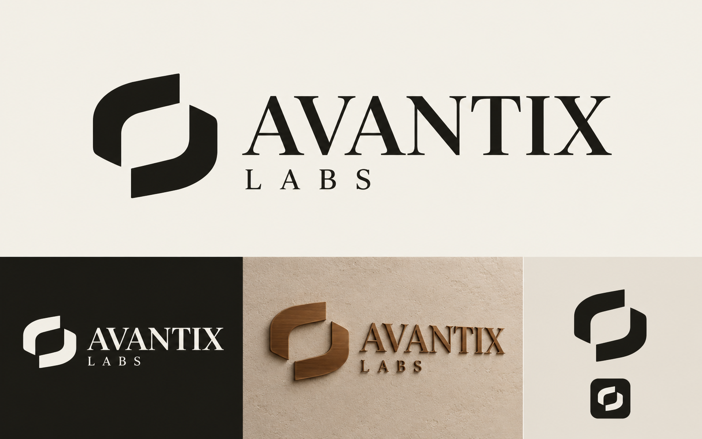
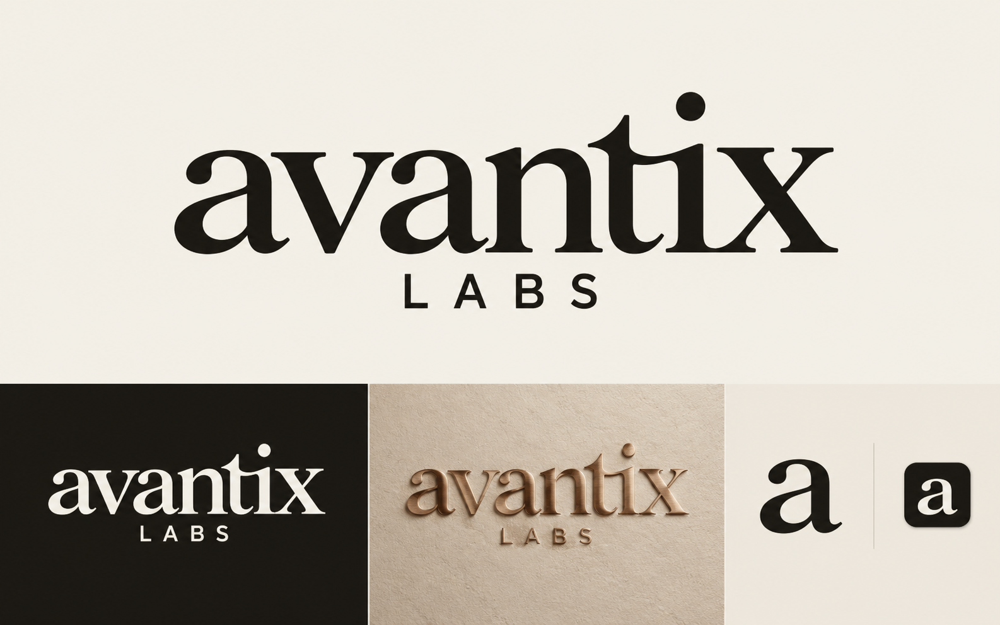

Eight ways to make
our mark.
Compare the symbols, lettering and bronze applications. Options 01–04 form the first set; 05–08 explore four additional directions.


Architectural A
A structural entrance built from the brand initial, suited to a dimensional website opening.
Open option 01 at full size ↗

AX Monogram
The first and last letters combine into a compact editorial signature.
Open option 02 at full size ↗

Linked Frames
Connected structural frames represent websites, bookings and automation working together.
Open option 03 at full size ↗

Editorial Wordmark
The full name leads, with a distinctive X for the secondary icon.
Open option 04 at full size ↗

AL Signature
Avantix and Labs initials form one refined serif monogram.
Open option 05 at full size ↗

Folded V
A geometric folded mark with measured sans-serif lettering and a technical character.
Open option 06 at full size ↗

Open Aperture
Two sculptural segments define an opening, suggesting new possibilities and connected flow.
Open option 07 at full size ↗

Humanist Wordmark
Warmer lowercase lettering offers an approachable alternative to the uppercase studies.
Open option 08 at full size ↗These are generated concept images for choosing a direction. The selected design can next be refined into consistent vector artwork, transparent files and production favicon sizes.